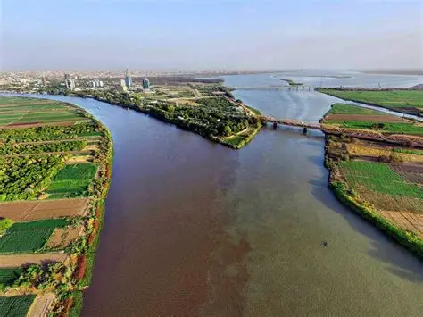

الكتيب السياحي السوداني
دليل مصور لأجمل الوجهات السياحية في السودان

أهرامات مروي
تقع شمال السودان، وتُعد من أبرز المعالم النوبية القديمة، وتتميز بتصميمها الفريد وتاريخها العريق.

مدينة سواكن
مدينة ساحلية تاريخية على البحر الأحمر، كانت ميناءً هامًا في العصور الإسلامية والعثمانية.

جبل مرة
يقع في غرب السودان، ويتميز بطبيعته الخلابة، الشلالات، والطقس المعتدل طوال العام.

نهر النيل
يمر عبر السودان ويشكل شريان الحياة، ويُعد من أجمل المواقع للرحلات النهرية والمشاهد الطبيعية.